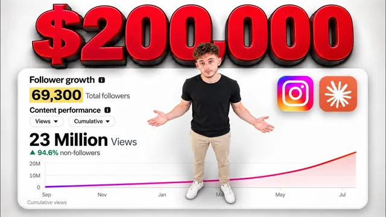

인스타 팔로워 7만을 클로드로 20만 달러로 만든 방법

원본 영상 보기 →
- 콘텐츠는 매번 처음부터 시작하는 게 아니라, 과거 성과 데이터를 재료로 쓰는 작업이다
- AI에게 맡길 반복 작업일수록, 사람은 판단 두세 개만 남기고 나머지를 규칙·데이터·컨텍스트 파일로 밀어넣어야 한다
- ICP를 이름 붙인 한 사람("Patrick")으로, 두려움·오해·구매 여정까지 극단적으로 상세히 정의하면 출력 품질이 올라간다
한 줄 요약
인스타그램 팔로워 7만 명, 이메일 구독자 2만 명, 숏폼만으로 마감된 딜 20만 달러 이상 — 이 모든 게 컴퓨터 안 폴더 하나에서 나왔고, 그 폴더는 "누구에게 말하는가 / 대본을 어떻게 짜는가 / 내 숫자는 무엇인가" 세 개 층으로 되어 있다는 콘텐츠 시스템 공개 영상.
전체 내용 정리
트렌드 주제를 폴더에 던지면 과거 데이터에 맞춘 대본이 나온다
닉 푸루는 클로드 워터마킹 뉴스처럼 평소 같으면 바로 찍어 인스타에 올렸을 주제를 이번엔 폴더에 넣는 장면을 먼저 보여준다. 붙여넣은 지시는 "대본 써줘. 클로드가 네가 쓰는 모든 글에 워터마크를 넣고 있어. 내가 과거에 올린 비슷한 것들을 다 끌어와서, 쓰기 전에 그 숫자부터 보여줘"였다. 시스템은 과거 릴들을 뒤져 이 주제와 모양이 비슷한 영상을 찾고, 워터마킹이 실제로 뭔지 검색해 대본 재료를 모은 다음, 쓸 만한 훅 후보까지 정리해준다. 출력에는 워터마킹 사실 확인 결과와 함께 "코퍼스 숫자"가 나오는데, 이건 만들려는 주제와 비슷한 과거 영상들의 성과 지표다. 예를 들어 "클로드가 네 맥의 모든 브라우저에 조용히 백도어를 심다 걸렸다"는 영상은 스킵률 34.7이었고, 시스템은 그런 성공 사례를 따라가려 한다. 반대편에는 같은 주제인데 먹히지 않았던 프레이밍이 실패 사례로 정리돼 있어, 시스템은 그쪽을 피한다.
인간은 "선물이냐 가이드냐"와 앵글만 결정하면 된다
대본을 쓰기 전에 시스템은 "쓰기 전에 네 판단이 필요한 게 두 가지 있어: 선물(gift) 방식이냐 가이드(guide) 방식이냐, 그리고 앵글"이라고 되묻는다. 닉 푸루는 "선물 방식으로 가고, 네 앵글에 동의해. 몇 가지 앵글을 줘서 골라보게 하고 대본 마무리해줘"라고 답한다. 나온 대본의 마지막 문장은 "다음 제안서 보내기 전에, 제안서 쓰는 사람에게 이걸 보내라"였다. B2B 상황이라 워터마킹을 "지난번 클라이언트 제안서에 이미 마크가 찍혀 있다"는 식으로 좁게 적용했는데, 더 넓게 잡으면 조회수는 늘겠지만 그는 인스타에서 에이전시 클라이언트를 잡는 게 목표라 일부러 제안서·업무 프로세스에 붙였다. 선물 방식이 아니면 "댓글로 X 달면 리드 마그넷 보내줄게" 같은 방식도 가능하고, 그가 대부분의 영상에서 쓰는 방식이 이 댓글 유도다. 대본이 나온 뒤엔 편집자에게 넘길 비주얼 훅도 뽑아주고, /review script를 돌리면 수정 에이전트가 모든 규칙 준수 여부를 다시 훑는다.
이 시스템의 엔진은 "과거 데이터"이고, 데이터가 없으면 같은 실패를 반복한다
가장 중요한 기능은 과거 데이터 의존이다. 인스타에 영상을 많이 올려 쌓인 분석(스킵률, 뭐가 먹혔고 뭐가 안 먹혔는지)을 시스템에 넣어두면, 앞으로 만드는 영상이 전부 데이터 위에서 만들어진다. 이 시스템 전에 닉 푸루는 릴을 약 60개 올렸는데, 조회수 말고는 어느 게 먹혔는지 말할 수 없었다. 인스타가 성적을 매겨 분석을 제공했지만, 보는 데 시간이 너무 걸려서 한 번도 안 봤다. 그래서 올리고, 망하고, 어깨 한 번 으쓱하고, 또 올린다. 콘텐츠가 안 되는 악순환에 빠지고 알고리즘이 나를 싫어한다고 지레짐작한다. 망한 영상에서 배울 수 있었던 건 다음 영상으로 넘어가지 못하고, 매번 처음부터 다시 시작하게 된다.
폴더 안에는 텍스트 파일 약 30개, 내 숫자 약 60행, 명령어 하나가 있다
폴더 구성은 텍스트 파일 약 30개, 자기 숫자 약 60행, 명령어 하나다. 클로드가 사실상 모든 글쓰기를 한다. 텍스트 파일들은 규칙을 담는다 — 가치 테스트, 유튜브 제목 패턴, 지켜야 할 파운데이션, CTA 템플릿 사용법, 모든 영상에서 말을 걸어야 할 ICP. "검증된 승자 배치(proven winners batch)"라는 리포트는 자기 영상들을 훑어 뭐가 잘됐는지 정리한 것이고, 여기에 영상 훅들과 각각의 스킵률이 들어 있다. 스킵률은 60~70%처럼 높으면 나쁘게 보고 낮은 쪽을 노린다. 닉 푸루가 본 다른 콘텐츠 시스템들은 이만큼 깊지 않아서, 파운데이션과 규칙을 다 갖추지도 않았고 과거 데이터도 포함하지 않는다.
ICP는 "Patrick"이라는 이름의 극단적으로 상세한 가상 고객이다
ICP는 "Patrick"이라고 부른다. 연 매출 약 30만~1500만 달러, 직원 수 약 2~100명(뒤에서는 2~50명으로도 언급). 지금까지 받은 모든 클라이언트를 합쳐 만든 합성 인물이다. 보통 운영 부담이 큰 서비스 업체 대표고, 챗GPT는 들어봤고 한 번쯤 열어봤을 정도, 새로운 걸 배울 시간은 주당 1~3시간, 뭘 주든 그가 위에 올라앉아 관리하지 않아도 알아서 돌아가야 한다(관리할 시간이 없으니까). Patrick에겐 오해, 핵심 두려움, 우리와 일하지 않을 이유, 우리에게서 실제로 사는 것, 의사결정 단계, 구매 여정, 콘텐츠 전략 함의까지 정의돼 있다. 닉 푸루는 이만큼 깊은 ICP 문서를 본 적이 없다고 하며, 이 상세함 덕분에 콘텐츠 시스템이 클라이언트를 많이 잡아온다고 말한다.
claude.md의 핵심 원칙: 10개 중 9개 영상은 요구가 아니라 "선물"이어야 한다
ICP 파일 옆에는 claude.md가 있다. 여기엔 포맷, 인스타 스토리 예외, ICP 등 가장 중요한 기본만 짧게 담는다. 자신을 "AI 뉴스 하는 사람"이 아니라 "비즈니스를 위한 AI 하는 사람"으로 알려지고 싶다는 것, 그래서 언어가 항상 ICP 방향을 향해야 한다는 것이 들어간다. 또 하나의 원칙은 10개 중 9개 영상이 "선물" — 뭔가를 요구하는 대신 리드 마그넷이나 가치를 그 영상 안에서 제공하는 것 — 이라는 점이다. 이런 시스템을 원한다면 숙제는 비즈니스에 대한 모든 맥락을 제공하는 것이다: 내가 누구고, 누구에게 서비스하고, 그들이 어떻게 말하고, 콘텐츠가 무엇을 하길 바라는지.
가장 핵심적인 조각은 숏폼 영상의 5대 구성요소다
이 시스템에서 가장 핵심적인 조각은 "컴포넌트" — 모든 숏폼 영상의 완전한 분해다. 이 분해를 지킨 영상들이 수백만 조회수를 냈다. 다섯 가지는 훅(hook), 인터레스트 피크(interest peak), 밸류(value), 프로미스(promise), CTA다. 훅은 영상의 첫 부분으로 오직 시청자의 주의를 얻기 위한 것이고, 영상이 안 되는 이유의 99%는 훅이 제 역할을 못 해서다. 훅이 일을 안 하면 세계 최고 편집자를 써도 소용없다. 인터레스트 피크는 시청자의 흥미를 자극하는 부분으로, 주의를 다시 끌어와야 할 때 언제든 쓴다. 예시: 훅 "형편없는 콘텐츠 아이디어 하나를 바이럴 영상 18개로 바꾸는 법"에 이어 인터레스트 피크 "내 능력이 의심되면, 멍청아, 나는 이 전략으로 6개월 만에 인스타를 0에서 20만 팔로워로 키웠어" — 훅이 주의를 잡고 피크가 권위를 세워 굳힌다. 밸류는 영상이 제공하는 핵심 정보나 해결책, 시청자에게 실제로 도움이 되는 알맹이다. 프로미스는 가치 제공 뒤에 주는 확인으로, 이 정보가 실행할 시간과 노력을 들일 값어치가 있고 A에서 B로 데려간다는 보증이다(예시에서는 "바이럴은 운이 아니라 계산이다. 못 믿겠으면, 지난 24개 영상이 전부 10만 조회수를 넘었고 여럿은 100만을 넘었다"). CTA는 시청자에게 원하는 행동을 하게 만드는 부분이고, 세 종류가 있다: 참여 CTA(영상에 참여하게), 리드 마그넷 CTA(무료 콘텐츠를 받게), 웰위싱 CTA(그냥 긍정적으로 마무리, "좋은 하루 보내"). 이 다섯이 다 잠겨 있지 않으면 훅이 아무리 좋아도 의미가 없다.
직접 만들려면 컨텍스트를 음성으로 구술하고 meta API로 데이터를 모은다
직접 만들려면 먼저 컨텍스트를 세운다. 빈 클로드 코드 인스턴스를 열고 마이크로 10~20분 동안 비즈니스, 목표, 전략, 경쟁자 이야기를 다 말한다. 이 유튜브 트랜스크립트를 통째로 주면서 "이 시스템을 만들려는데 도와줘. 나를 인터뷰해줘"라고 시켜도 된다. 다음으로 데이터 수집이다. "검증된 승자 배치"를 위해 meta용 API를 시스템에 연결해 과거 영상의 지표를 가져온다. 가져올 수 있는 건 스킵률, 리치(reach), 세이브율(save rate), 시청(watch) 정도다. 스킵 하나만으로는 목표가 아니고, "스킵 × 세이브율"이 기준이다. 폴더 안엔 훅 템플릿, 인스타 스토리 디자인 템플릿, 인터레스트 피크 템플릿, 영상 템플릿 등 다른 창작자들의 검증된 데이터 기반 템플릿이 많이 들어 있다.
파운데이션 규칙과 3개 레이어 구조
파운데이션 파일에는 빠른 승리 규칙들이 있다: 부정적인 것이 항상 이긴다, 콘텐츠를 넓혀라(넓은 훅이 초기 주의를 더 끌고 영상 안에서 좁혀 이상적 시청자를 걸러낸다), "너(you) 형식"으로 말하라("이 비즈니스는 10만 달러에 도달할 수 있다" 대신 "당신의 비즈니스는 10만 달러에 도달할 수 있다"). 또 다른 규칙 파일은 각 영상이 무엇으로 구성돼야 하는지를 정한다 — 초당 약 3단어로 말한다고 가정하고 최대 90초, 그래서 대본이 너무 길 수 없다. 전체 시스템은 세 개 층이다: 1층은 누구를 위해 쓰는가, 2층은 대본이 어떻게 만들어지는가, 3층은 이 둘 밑에 깔리는 내 숫자다. 3층은 시간이 지나며 쌓인다. 유튜브 트랜스크립트와 클로드 코드, 텍스트 에디터만으로 러프한 버전을 만들 수 있고, 이미 만들어진 폴더를 원하면 유료 커뮤니티에서 받을 수 있다고 한다.
핵심 인사이트
- 콘텐츠는 매번 처음부터 시작하는 게 아니라, 과거 성과 데이터를 재료로 쓰는 작업이다: 스킵률·세이브율 같은 지표를 한곳에 모아두면 "먹힌 프레이밍은 따라가고 망한 프레이밍은 피한다"가 자동화된다. 데이터를 안 보면 60개를 올려도 학습이 다음 편으로 이어지지 않는다.
- AI에게 맡길 반복 작업일수록, 사람은 판단 두세 개만 남기고 나머지를 규칙·데이터·컨텍스트 파일로 밀어넣어야 한다: 이 시스템에서 사람이 하는 결정은 "선물이냐 가이드냐"와 "앵글" 정도다. 나머지는 30개 텍스트 파일과 60행 숫자가 처리한다.
- ICP를 이름 붙인 한 사람("Patrick")으로, 두려움·오해·구매 여정까지 극단적으로 상세히 정의하면 출력 품질이 올라간다: 모호한 타깃 서술이 아니라 "매출 30만~1500만 달러, 직원 2~50명, 주당 1~3시간, 관리 없이 굴러가야 함"처럼 구체적일수록 클로드가 그 사람에게 말을 건다.
오늘 당장 해볼 것
- 지난 20~30개 게시물(릴·숏츠·블로그 무엇이든)의 성과 지표를 스프레드시트 한 장에 옮긴다. 조회수만이 아니라 저장·완주율·스킵 관련 숫자를 열로 만들고, 상위 5개와 하위 5개를 표시해 "어떤 프레이밍이 먹혔는지" 한눈에 보이게 한다.
- 내 ICP를 이름 붙인 한 사람으로 문서화한다. 연 매출 범위, 직원 수, 새 도구에 쓸 수 있는 주당 시간, 핵심 두려움 3개, 나와 일하지 않을 이유 2개를 채운다. 이 문서를 클로드 프로젝트나 claude.md에 넣는다.
- 빈 클로드 코드(또는 클로드 프로젝트) 창을 열고 이 영상 트랜스크립트를 붙여넣은 뒤 "이 3층 시스템을 내 업종에 맞게 만들고 싶다. 나를 인터뷰하면서 질문해줘"라고 시켜, 내 컨텍스트 파일 초안을 대화로 뽑아낸다.